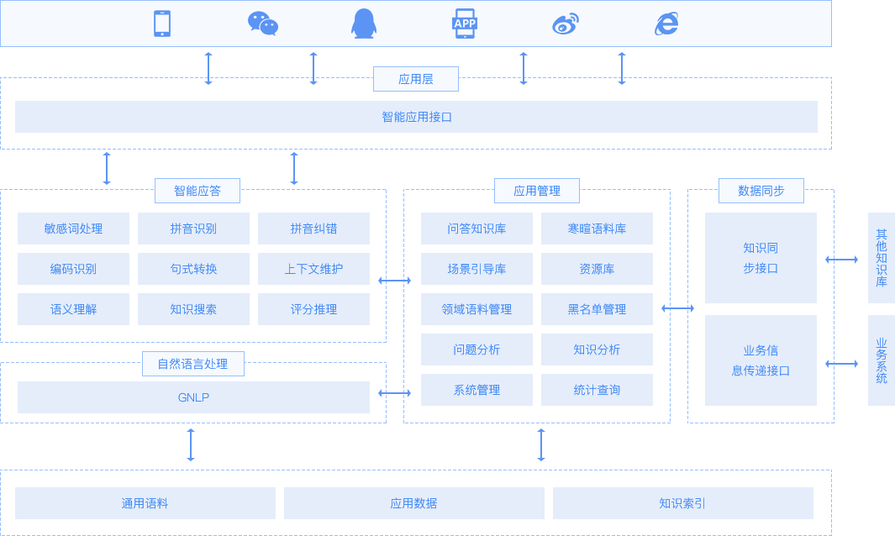

业务痛点
人力成本越来越高相应企业运营成本增加
人力成本越来越高相应企业运营成本增加
人力成本越来越高相应企业运营成本增加
人力成本越来越高相应企业运营成本增加
方案概括
基于上述挑战，极天信息基于 GBot® 产品，面向运营商、银行、旅游、教育等诸多行业的机构或企业，打造了专业的智能客户服务解决方案，核心在于让智能机器人与客户全渠道连接，扮演“专业客服”角色，基于自然语言处理技术理解客户意图，以拟人化方式为客户实时提供咨询、交互引导、业务办理、精准营销等智能化服务。针对客户的不同需求和应用场景，提供本地化部署和云服务两种交付方式核心功能
问答服务
在识别用户意图的基础上，基于概念及概念关系推理，从问答知识中检索、计算出最符合用户问题语义的知识答案返回给用户业务咨询
客服机器人在理解用户的查询需求，通过机器人系统与业务系统的对接，实时获取用户查询数据，并通过机器人反馈给用户数据分析
服务过程中会积累大量数据，通过对数据的挖掘分析，获取对企业有用的价值信息，如用户关注的热点业务、对于企业产品、服务的评价、需求等等；另外，积累的数据也可用来对客服机器人进行训练，让它变得更加聪明场景对话
通过交互方式引导整个对话过程按一定的场景流程推进，过程中可识别用户当前意图、采集用户句子中的实体概念或具体的数值，结合上下文场景变量的管理实现对话管理。 场景对话式的服务方式，适合任务式的服务，通过多轮对话，最终达成用户的目的聊天
增强机器人的拟人性和趣味性，通过多年的数据积累及不断的聊天会话训练，系统具备了很强的聊天能力，目前寒暄和百科语料已超过千万主动营销
利用机器人与用户接触的机会，并结合企业的营销方案，基于用户画像和用户行为分析，推送用户可能关心的营销信息场景解读
业务价值
大幅降低成本，提高效率
基于数据分析优化业务及服务
人机协同，提供分层服务全方位提升服务体验
基于数据分析优化业务及服务
基于用户画像的营销推送创造商机